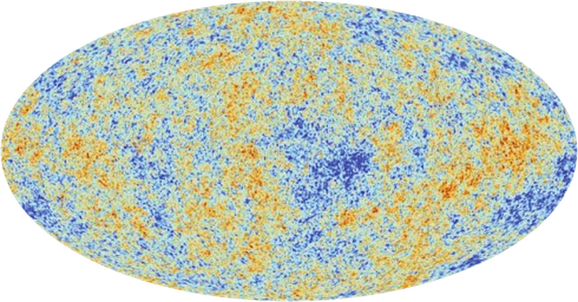
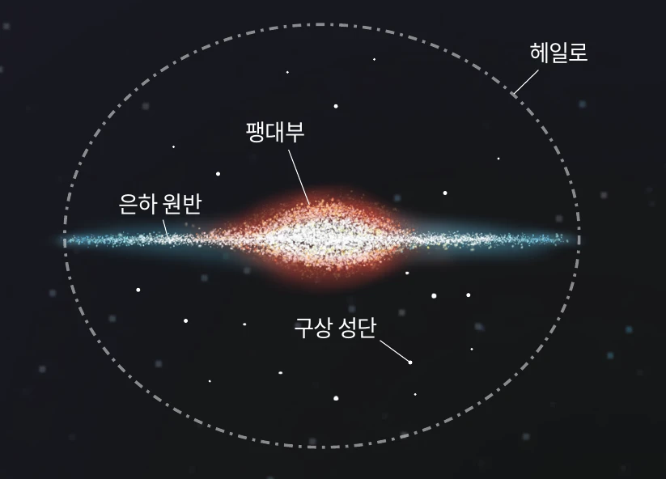
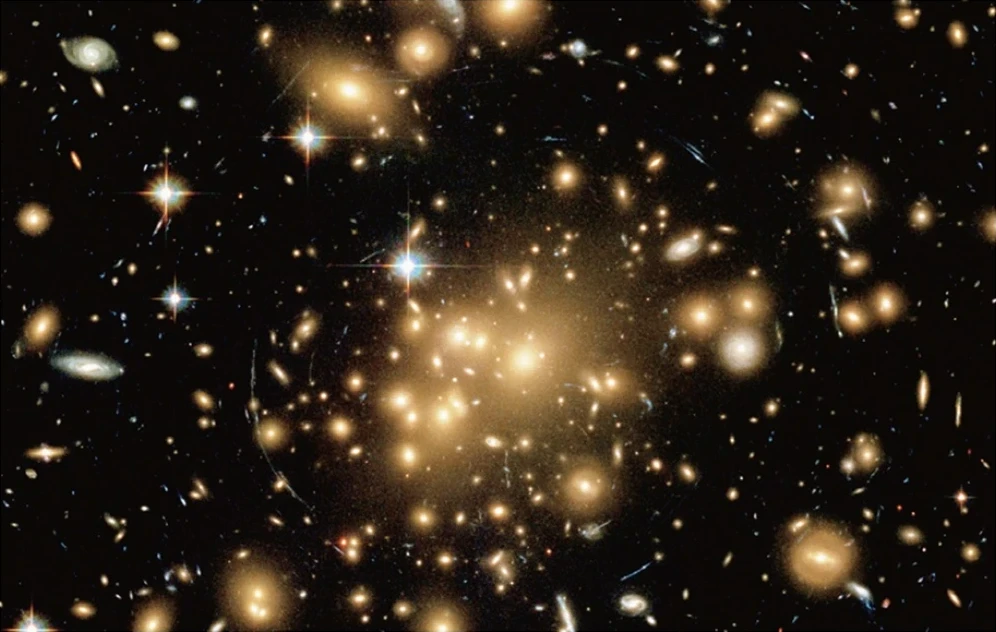

하연샘 지구과학 실험실고등학교 · 지구과학 · 별과 우주
빅뱅 우주론의 관측적 증거인 우주 배경 복사와, 빛을 내지 않지만 중력으로 존재를 드러내는 암흑 물질을 알아보자.
위의 번호를 누르거나 좌우로 넘기며 차례대로 학습해 보자.
우주가 투명해진 순간의 빛이 지금도 우주 전역에 남아 있다.
빅뱅 우주론에 따르면 초기 우주는 매우 뜨거웠기 때문에 전자와 양성자 등이 분리된 상태로 섞여 있었다. 빅뱅 이후 약 38만 년이 지나고 우주의 온도가 약 3000 K으로 낮아졌을 때 원자핵이 전자와 결합해 원자가 형성되었다. 원자의 형성 전에는 우주가 불투명한 상태였지만 원자가 형성된 후에는 빛이 자유롭게 진행할 수 있는 투명한 상태가 되었다.
빅뱅 우주론에서는 우주가 투명하게 되었을 때 우주 공간을 매우 균일하게 채우고 있었던 빛을 우주 배경 복사라고 설명했다. 또 당시의 우주 배경 복사가 우주가 팽창하면서 온도가 낮아져 현재는 수 K의 흑체 복사로 관측될 것이라고 주장했다.
1964년 미국의 펜지어스(Penzias, A. A., 1933~)와 윌슨(Wilson, R. W., 1936~)은 하늘의 모든 방향에서 같은 세기로 나타나는 복사 에너지를 발견했는데, 이것이 빅뱅 우주론에서 예측했던 우주 배경 복사였다. 이후 정밀한 관측을 통해 우주 배경 복사는 온도가 약 2.7 K인 흑체 복사와 일치한다는 것이 밝혀졌다.
빅뱅 우주론을 지지하는 가장 강력한 관측적 증거는 우주의 거의 대부분을 차지하는 수소와 헬륨의 질량비가 약 3 : 1이라는 것과 우주 공간 전역에 약 2.7 K에 해당하는 우주 배경 복사가 존재한다는 것이다. 이 관측적 증거를 바탕으로 1960년대 후반 빅뱅 우주론이 정립되었다.
해 보기
우주가 팽창함에 따른 우주 배경 복사의 온도와 파장의 변화를 서술하시오.
모범 답안
우주가 팽창함에 따라 우주 배경 복사의 온도는 낮아지고(약 3000 K → 약 2.7 K), 파장은 길어진다. 그래서 현재는 파장이 긴 마이크로파 영역에서 관측된다.
정밀한 관측으로 초기 우주의 미세한 온도 차이가 확인되었다. 온도가 높은 영역은 물질이 많이 분포하는 곳으로, 중력에 의해 더 많은 물질이 모이게 되어 은하와 별들이 형성되었다.

빛을 내지 않는데 어떻게 존재를 알 수 있을까?

나선 은하는 중앙 팽대부와 얇은 원반으로 구성되어 있으며 나선팔을 갖고 있다. 나선 은하에서 중앙 팽대부에는 나이가 많은 붉은색 별이 주로 분포하고, 나선팔에는 성간 물질이 풍부해 나이가 적은 파란색 별이 많이 분포한다.
천문학자들은 빛을 내는 물질의 분포로 은하의 질량 분포를 추정했다. 빛을 내는 물질이 중심부에 밀집되어 있으므로 은하의 질량도 대부분 중심부에 모여 있다고 생각할 수밖에 없었다.
태양계는 우리은하 중심에서 약 2만 6천 광년 떨어진 나선팔 근처에 있다. 지구가 자전하고 태양 주위를 공전하는 것처럼, 태양계 전체도 우리은하 중심을 돌고 있다.
이렇게 빨리 움직여도 은하가 워낙 커서 한 바퀴 도는 데 약 2억 3천만 년이 걸린다. 지구에 공룡이 처음 나타난 무렵부터 지금까지 태양계는 은하를 겨우 한 바퀴 돈 셈이다.
1960년대 말 루빈(Rubin, V., 1928~2016)은 안드로메다은하에 있는 별과 기체의 회전 속도를 연구했다. 루빈은 은하 내에서 빛을 내는 물질의 분포로부터 은하의 질량은 대부분 중심부에 집중되어 있고, 은하 중심에서 멀어질수록 회전 속도가 느려질 것으로 예측했다. 그런데 실제 관측 결과는 은하 중심에서 멀어지더라도 회전 속도가 감소하지 않는 것으로 나타났다.
질량 분포에 따른 회전 속도
별의 회전 속도는 별의 궤도 안쪽에 있는 질량이 클수록 빠르고, 은하 중심으로부터의 거리가 멀수록 느리다.
관측 결과는 은하의 외곽에 빛을 내지 않는 물질이 훨씬 많이 분포한다는 것을 의미한다. 이처럼 은하 질량의 대부분을 차지하고 있으며, 보통 물질과 달리 빛을 내지 않는 물질을 암흑 물질이라고 한다.
‘암흑’은 눈에 보이는 색깔이 검다는 뜻이 아니라, 아직까지 그 정체가 알려지지 않았기 때문에 붙인 이름이다.
암흑 물질은 가시광선뿐만 아니라 전파, 적외선, X선 등 어떤 전자기파도 방출하거나 흡수하지 않는다. 그래서 어떤 파장의 망원경으로도 직접 관측할 수 없고, 중력의 효과로만 존재를 알 수 있다.
단지 빛을 내지 않는다고 해서 암흑 물질인 것은 아니다. 차가운 가스 구름이나 행성도 스스로는 빛을 거의 내지 않지만, 빛을 흡수하거나 적외선·전파를 내기 때문에 전자기파로 관측할 수 있는 보통 물질이다. 암흑 물질은 이렇게도 관측되지 않는다는 점이 다르다.
암흑 물질은 빛을 흡수하거나 방출하지 않기 때문에 전자기파 영역에서 직접 관측할 수 없지만 질량을 가지기 때문에 중력을 이용하면 간접적인 방법으로 존재를 확인할 수 있다. 특히 중력 렌즈 현상을 이용해 우주에 존재하는 암흑 물질의 분포를 확인할 수 있다. 암흑 물질은 우주의 구조, 은하의 형성과 진화 등에 중요한 역할을 하는 것으로 알려져 있다.

1 / 4해 보기
A와 B 중 실제 관측한 회전 속도에 해당하는 곡선을 고르시오. 우리은하의 바깥쪽에서 두 곡선의 회전 속도가 어떻게 달라지는지 비교하고, 이러한 차이가 나타나는 까닭이 무엇인지 우주 구성 요소와 관련지어 서술하시오.
모범 답안
실제 관측값에 해당하는 곡선은 A이다. 우리은하의 바깥쪽에서 중심으로부터 멀어질수록 B의 회전 속도는 감소하지만, A의 회전 속도는 거의 일정하게 유지된다. 빛을 내는 물질 외에도 암흑 물질이 우리은하 바깥쪽까지 분포하여 중력에 기여하므로, 실제 회전 속도가 예측값보다 높게 유지된다.
우주 배경 복사와 암흑 물질 연습 문제 (9문제)
하연샘 지구과학 실험실로 돌아가기
그림 속 입자, 은하, 관측값과 온도 분포 지도는 원리를 보여 주기 위한 모형이다.